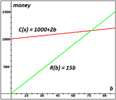

Actually, many of the key ideas of understanding word problems were discussed in the very beginning of the "1A-Function Concepts" section, in the discussion of variable descriptions. So this might be a good time to quickly re-read that section. If you can correctly identify the variables, you're half-way through the hard part of a word problem. The other half is translating the sentences of the problem into equations that use those variables.
In this section we focus on linear models. Linear means the equation which we use to model the situation is a line. A equation for a line has two components: slope and the vertical intercept. How do the slope and intercept apply to a situation? Let's work through a few examples, very carefully.
Example 2C-1: Suppose your grandmother is driving to Pocatello from Caldwell on a Sunday afternoon. There won't be any slow downs for road work or rush hour traffic, so you figure she will be able to drive a steady 65 miles per hour once she's on the freeway.
(a) Let's write a linear function that models the distance she's travelled after leaving Caldwell. First, let's figure out what the variables should be. They should be the quantities we don't know, pertain to the problem and help get the model we are asked to find. It's also a good idea to list what we know about the situation
| We want to know the distance traveled: | Let $d$ be her distance from Caldwell |
| The distance depends on how long she's been driving: | Let $t$ be the number of hours driven |
| She will drive about $65$ miles per hour. |
Now, consider the situation. If you travel $65$ miles per hour for $2$ hours, how far do you go? A little common sense will tell you that the answer is $130$ miles. This relationship is captured in the following equation:
$d = rt$ where $d$ is the distance traveled $r$ is the rate, or speed $t$ is the time travelled
The equation we are looking for is: $$\mbox{Distance = rate } \times \mbox{ time }$$ $$d = 65 t$$ Notice this is a linear equation and since it is an equation for a line, we might ask: What is the $d$-intercept? In this case, the distance she's travelled at the start of her trip (when $t=0$) is zero. Finally we have the equation for Granny's distance from Caldwell after $t$ hours on the freeway: $d= 65t$.
(b) Let's find out how far she will be after $3\frac{1}{2}$ hours on the road--assuming she doesn't make any stops along the way. Let $t = 3.5$ and calculuate $d$: $$d = 65(3.5) = 227.5$$ She will have travelled $227.5$ miles and since Pocatello is about $258$ miles from Caldwell, she should just about be there after $3\frac{1}{2}$ hours.
So, if you know a situation is modeled with a linear function, in the statement of the problem, you need to find what you always need to know in order to find the equation for a line: the slope and the vertical intercept (the $y$-intercept if the dependent variable is $y$.) So, look through the problem to see if you can find the necessary pieces to calculate these two parts of the equation for a line. Try this one:
Example 2C-2: Four years ago a house was purchased for $\$150,000$. This year it's appraised value is $\$155,450$. Assume that the value of the house after its purchase is a linear function of time (in years).
(a) Find the function which models the value of the house $t$ years since it was purchased.
Solution: If you didn't notice that this function is supposed to be a line, you were not paying attention--read the problem over again! Now, let's get to work. There are two variables in this problem:
| The value of the house: | $V =$ The value of the house |
| The number of years since the house was purchased: | $t =$ The number of years |
Now that we have a formula for the value of the house, we may answer questions like:
(b) According to this model, what will the house be worth in eight years?
Solution: Here $t=8$, so $V(8) = 1362.5 (10) + 150000 = 160,900$. The model predicts the house will be worth $\$160,900$ eight years from now.
(c) Now try this one: When will the house be worth $\$200,000$?
Solution: We want to know when the value will be 200,000. In this case, we know the value of $V$ but not $t$. Substitute the $200000$ for $V$ and solve the equation for $t$: $$ \begin{align} 200000 & = 1362.5 t + 150000\\ 50000 & = 1362.5 t\\ t & = \frac{50000}{1362.5} \approx 36.7 \mbox{ years }\\ \end{align}$$
(d) One more: How fast is the value of the house appreciating? (Note: "appreciating" means increasing in value and "depreciating" means decreasing in value.)
Solution: Consider the slope calculation again, but this time with what the numbers represent: $$ \begin{align} \mbox{slope} & = \frac{\$155,450 - \$150,000}{4 - 0 \mbox{ years}} & \\ & = \frac{\$5450}{4 \mbox{ years}} & \mbox{ Reduce the fraction}\\ & = \frac{\$1,362.50}{1 \mbox{ year }} \mbox{ or } \$1,362.50 \mbox{ per year}\\ \end{align}$$ Since the slope is the change in the value per change in year, the value is increasing by$ \$1,362.50$ per year.
Example 2C-3: Money deposited in a savings certificate often earns interest at a higher rate than an ordinary savings account, but requires you leave the money in the certificate for a fixed amount of time. Suppose you put money into a 12-month savings certificate with a yearly interest rate of $4\%$.
(a) Write an equation which takes a deposit amount and calculates the amount in the certificate after a year. Solution: In this case, we don't know the beginning deposit amount and the final certificate value, so we'll let $A$ be the amount we invest and $V$ be the value at the end of 12 months. To find the interest paid at the end of the year, we calculate $4\%$ of the deposited amount: $0.04A$. To get the equation, we add the interest to the original amount to get the total value: $$V = A + 0.04A$$ We could simplify this expression by factoring out the $A$: $$V = (1+0.04)A$$ $$V = 1.04A$$
(b) What is the value of the certificate at the end of 12 months if $\$5000$ is initially deposited? Solution: $V = 1.04(5000) = 5200$, so it will be worth $\$5,200$.
(c) Solve the equation for $A$. What amount will you need to deposit in order to have $\$10,000$ at the end of 12-months. Solution: Solving for $A$: $$ \begin{align} V & = 1.04A\\ \frac{1}{1.04}V & = A\\ \mbox{So, } A & = 0.961538 V \\ \end{align}$$ Note that the $0.961538$ is slightly rounded from the exact value of $\frac{1}{1.04}$ which means our answer may be a lttle off the actual amount. To answer the question: $$A = 0.981538(10000) = 9615.38$$ In this case, we can easily check our answer: $V = 1.04(9615.38) = 9999.9952$ which rounds to $\$10,000$. I suppose if you really needed to make sure you had exactly $\$10,000$ at the end of 12 months, you should have an extra penny saved up on the day you needed the money!
Three types of functions are central to many business models:
Example 2C-4: (a) Suppose you are selling tomatoes at a local farmer's market. Your fixed costs are $\$1000$ and it costs $\$2$ to produce each box of tomatoes--I'm making this up by the way--which you plan to sell for $\$15$ per box. Clearly, your cost function is -- wait a minute, we need a variable for the number of boxes of tomatoes, say $b$-- $$C(b) = 1000 + 2b$$ and the revenue function is $$R(b) = 15b.$$ The profit function is
| $P(b) = R(b) - C(b)$ |
| $P(b) = 15b - (1000+2b)$ |
| $P(b) = 13b - 1000.$ |
(b) In doing business, the "break-even" point is when the money you receive from selling your product is equal to the money it costs to make or supply your produce: Revenue equals Cost.
What is the break-even point for your tomato selling business? Solution: We just need to find how many boxes of tomatoes makes the revenue equal to the cost: $$ \begin{align} R(b) & = C(b)\\ 15b & = 1000 + 2b\\ 15b - 2b & = 1000 \\ 13b & = 1000 \\ b & = 1000/13 \\ b & = 76.923 \\ \end{align}$$ In this case, we cannot sell $0.923$ of a box of tomatoes, so we'll need to sell $77$ boxes to break even.
| If you consider the break-even point in terms of the Revenue and Cost functions, it's the point the two graphs have in common--where they intersect, approximately at $77$. |  |
Note that since we had already calculated the profit function, we could have used it to find our answer. If revenue equals cost, the profit will be zero. So, another way to look at the break-even point is when profit is zero: $$ \begin{align} P(b) & = 0\\ 13b - 1000 & = 0\\ 13b & = 1000 \\ b & = 1000/13 \\ b & = 76.923 \rightarrow 77 \mbox{ boxes}\\ \end{align}$$ See, we get the same answer.
Remember, most of the time, the key to doing word problems for linear functions is to find what you need for the slope and vertical intercept. Now let's step it up by solving word problems involving simultaneous equations.
Example 2C-5: A roll of dimes and a roll of quarters lie on the table in front of you. There are three more quarters than dimes. But the quarters are worth three times the amount that the dimes are worth. How many of each do you have?
"There are three more quarters than dimes." $\checkmark$
"The quarters are worth three times the amount that the dimes are worth." $\dashrightarrow$ Well, the quarters are worth $18 \cdot 25 = \$4.50$. The dimes are worth $15 \cdot 10 = \$1.50$. $\checkmark$
Example 2C-6: When your grandmother got back from Pocatello, she got a scratch lottery ticket for her birthday which turned out to be a winner for $\$50,000$. Being a smart grandmother, she decided to invest the money. Her friends tell her she should invest part of the money in noninsured bonds paying $12\%$ annual interest. They are a bit risky, but the high interest might be worth it. The rest she plans to put into government-insured certificates paying $4\%$ per year in interest. She wants to help you out in college and would like the investments to make $\$3000$ per year. How much money should go into each investment?
$12500 + 37,500 =50,000$$ \checkmark$ We have the right total. $0.12(12500 ) + 0.04(37,500) = 1,500 + 1,500 = 3000$ $\checkmark$ She's going to get the interest amount she wanted.
Example 2C-7: A helicopter transporting fire retardant during the Idaho fire season can travel 36 miles with the wind in 1.5 hours. On the return trip it carries fire crew and equipment against the wind, returning to base in 2 hours. Find the helicopter's rate in still air and the wind speed. Assume the weight of the helicopter's load is about equal on the outward and return trip and that it maintains the same still air speed.
Solution:
$2(21-3) = 2(18) = 36$ and $1.5(21+3) = 1.5(24) = 36 \checkmark$ .
Again, the key to solving problems is to identify what you are looking for (what is the question?), what you don't know (what do your variables represent?) and then constructing equations to describe the situations. Once this is done, it's just a matter of working through the process of solving for the variables. You can always know if your solution is correct by checking that it meets the conditions of the original problem.